I didn’t just prepare for this interview — I built the growth engine I would use in the role: a system to generate, prioritise and launch experiments, measure impact, and drive user activation. Built in 5 days using n8n, Notion, GrowthBook, Amplitude and AI tools like Claude and ChatGPT.
See what I built →I built three user-facing tools designed to create immediate value for SMB sellers, generate intent, and turn product usefulness into a growth channel.
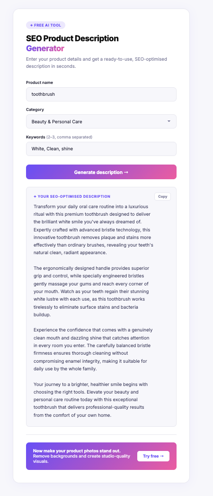
Product name + category + keywords → AI-generated SEO description. Built as a lightweight acquisition mechanic with a clear path into Photoroom.
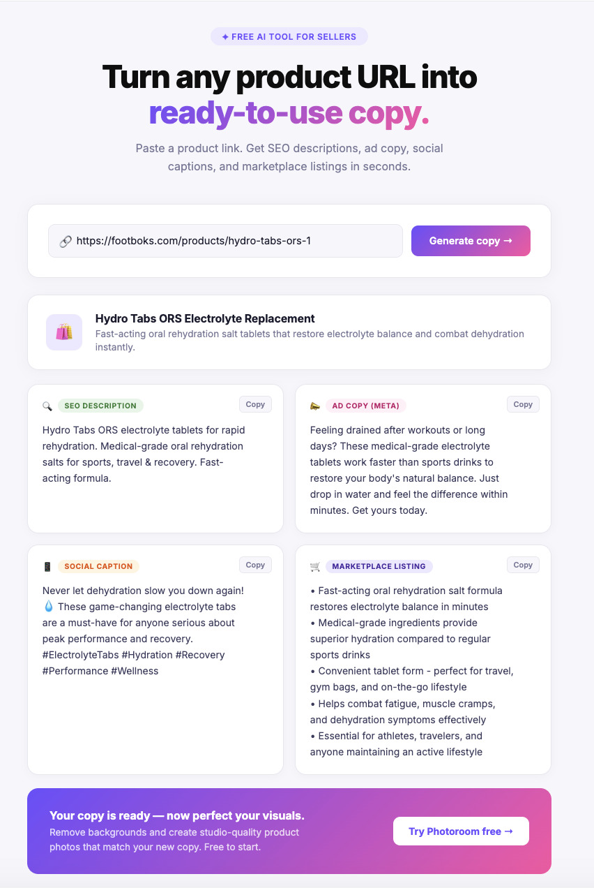
Product URL → SEO description, ad copy, social caption and listing copy. Built to reduce friction for merchants and surface product value quickly.
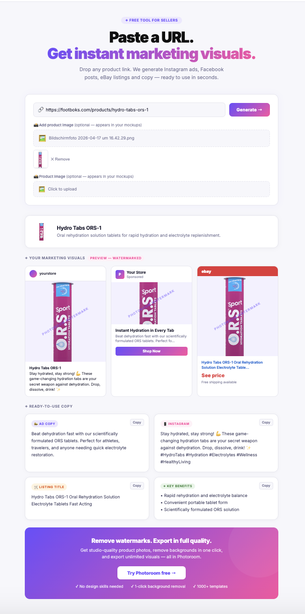
Product URL + optional upload → ad and listing mockups with watermark-driven upgrade logic. A PLG-style asset built around activation and conversion.
Beyond the portfolio system, I’ve also shipped conversion-focused UI work directly in Shopify using Liquid. These examples show live storefront implementation rather than just tooling or planning.
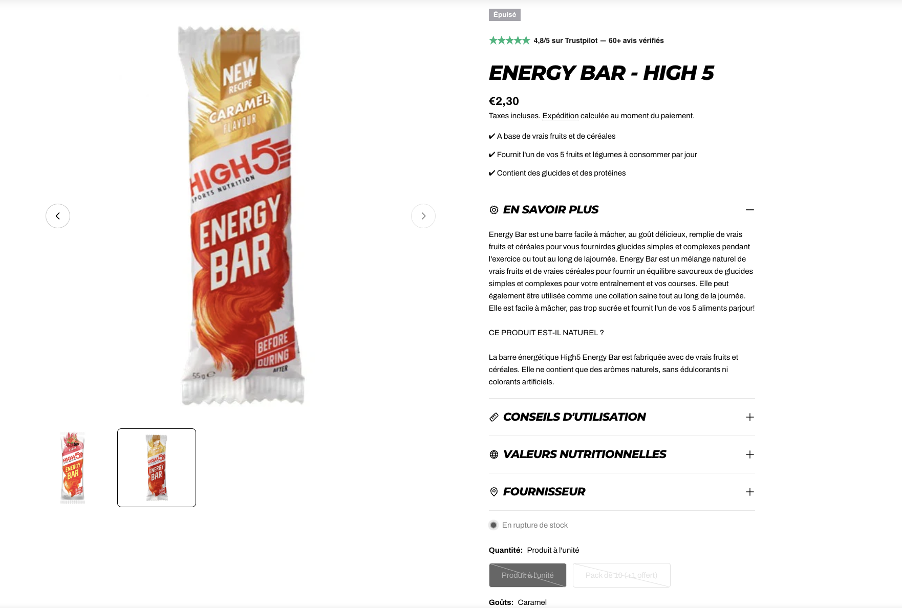
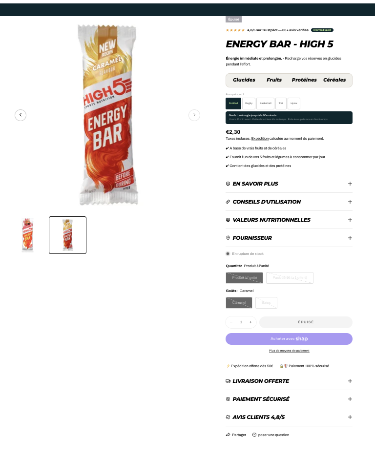
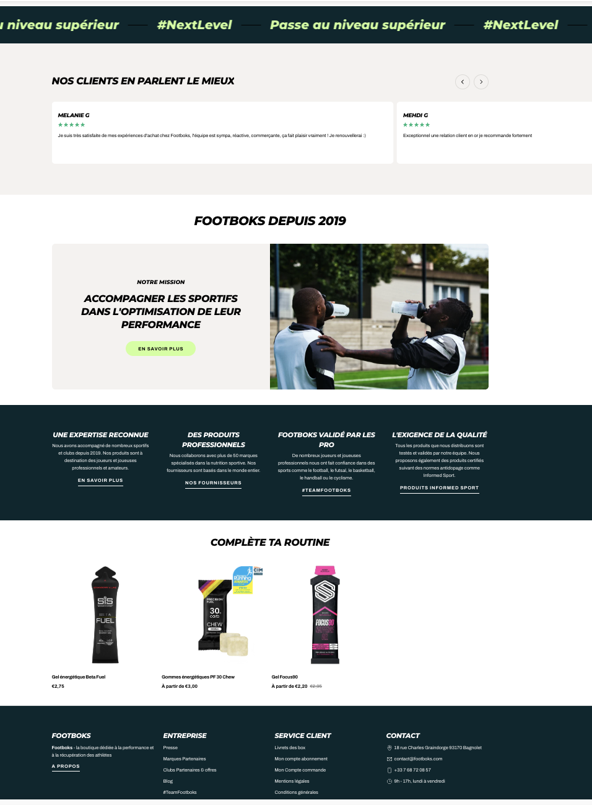
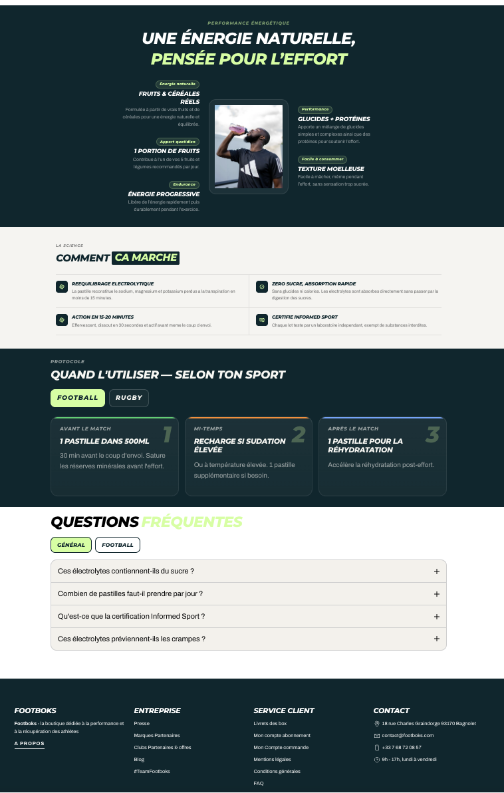
I also built a broader experiment pipeline across acquisition, conversion, retention and PLG. Instead of listing all 50 inline, I’m surfacing a representative sample of the highest-signal ideas I’d prioritise first.
Scale long-tail acquisition with targeted category pages built around seller intent and marketplace-specific problems.
Use a lightweight free tool as an acquisition wedge to attract merchants, create immediate value, and route them into the product.
Improve screenshots, messaging and keyword alignment on an already high-intent channel to unlock compounding organic acquisition.
Introduce a monetisation moment after repeated value delivery, testing copy and timing at a naturally high-intent point.
Reduce signup friction by letting users experience core product value first, then convert after the “aha” moment.
Create a viral mechanic tailored to seller communities by rewarding both the referrer and the invited merchant.
Full experiment library built separately with 50 prioritised ideas across acquisition, conversion, retention, viral / PLG and partnerships. :contentReference[oaicite:1]{index=1}
To support fast growth execution, I built an operating system that moves ideas into backlog, backlog into active experiments, and active experiments into measurable outcomes.
Free-form idea capture with funnel-stage tagging and a direct handoff into the experiment pipeline when an idea is ready to move.
ICE-based prioritisation layer used to rank, review and approve experiments before they move into active execution.
Execution database with structured properties for owner, KPI, stage, launch readiness, results and learnings.
The operational layer removes manual handoffs and keeps experiment execution moving. This is the infrastructure I’d want in place to move quickly as a growth marketer.
Selected ideas move automatically into backlog with mapped fields like hypothesis, funnel stage and initial status.
Once approved, backlog items create active experiment entries and move into execution with the right metadata already in place.
Validation logic checks required launch fields and flags incomplete setups before experiments go live, with automated owner notifications.
Experiment status and metadata sync back from GrowthBook into Notion to keep the operating system aligned with what is actually running.
These are the actual systems and dashboards behind the portfolio: Notion for workflow, n8n for orchestration, and Amplitude for funnel visibility.
Three connected databases that move ideas into prioritised backlog items and then into active experiments.
Free-form idea capture with funnel-stage tagging and a direct handoff into the experiment pipeline.
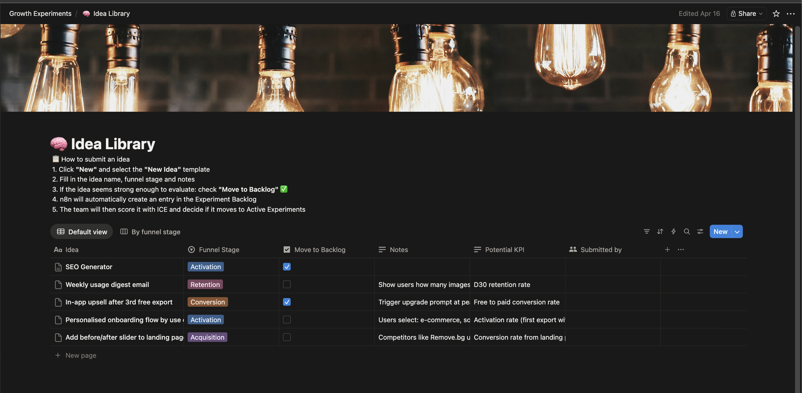
ICE-based prioritisation layer used to review, rank and approve experiments before launch.
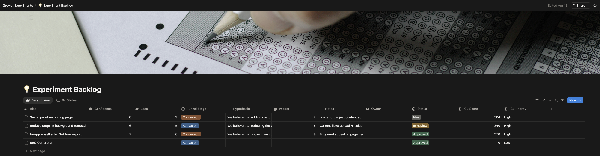
Launch-ready execution database with structured fields for owners, KPI tracking, statuses and learnings.
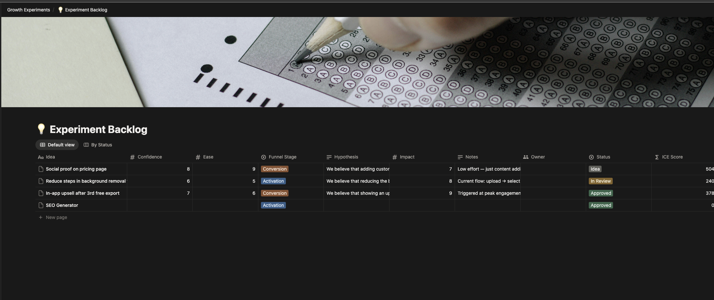
The workflows show how ideas move automatically between systems, how launch intake is validated, and how experiments stay synced.
Moves selected ideas into the backlog and maps the core experiment fields automatically.
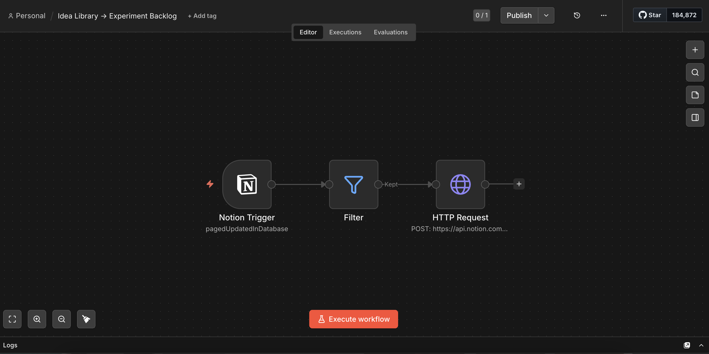
Checks required launch inputs and flags incomplete setups before they go live.
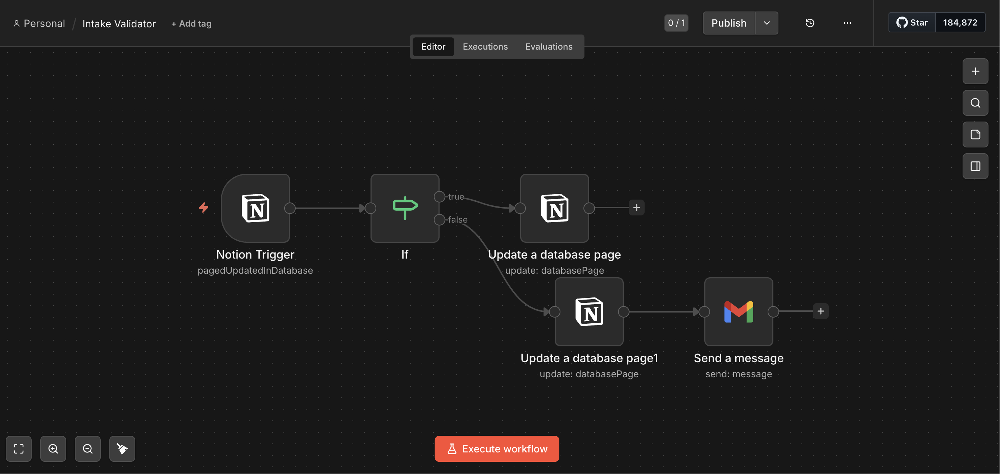
Creates the active experiment record once a backlog item is approved and ready to enter execution.
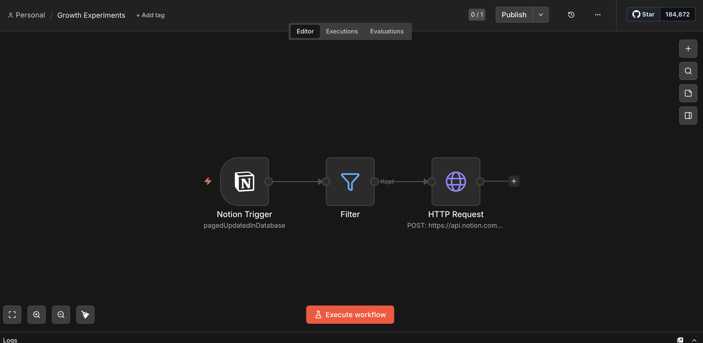
Keeps experiment metadata aligned between GrowthBook and Notion so execution status stays accurate.
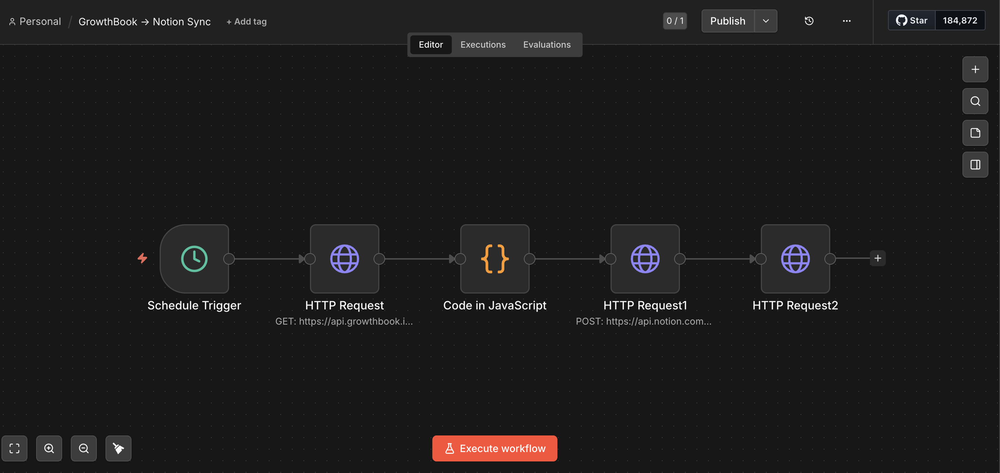
The analytics layer translates the experimentation system into funnel visibility and activation insight.
Top-level view of activation and drop-off points to identify where growth effort should be focused first.
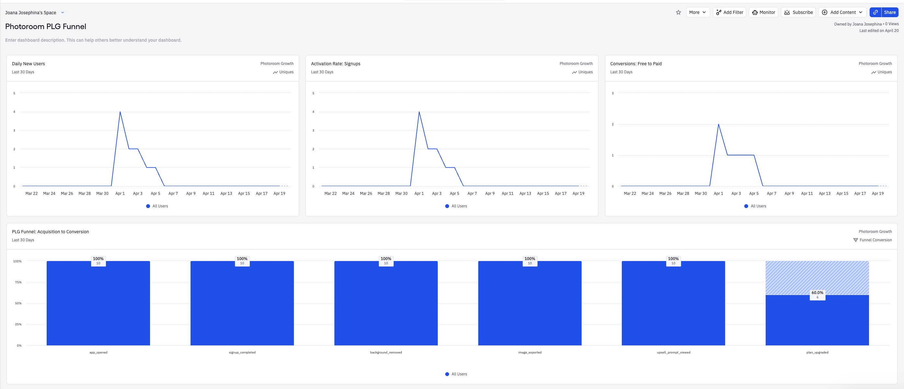
A deeper breakdown used to isolate bottlenecks, evaluate experiment impact and inform prioritisation.
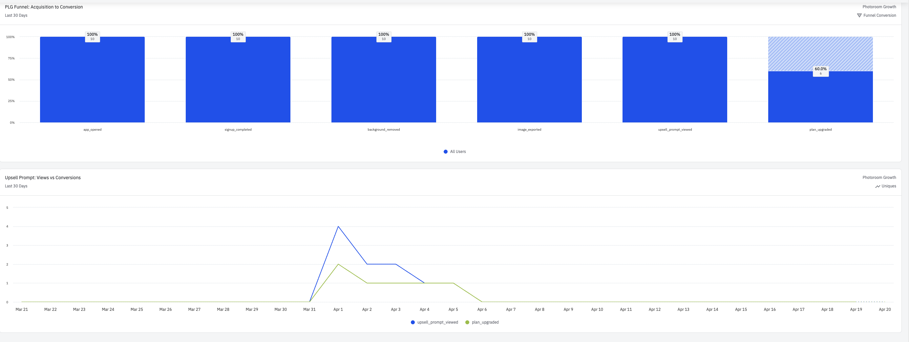
How I’d approach the role from day one — learning fast, shipping early, and building a reliable cadence around experimentation.